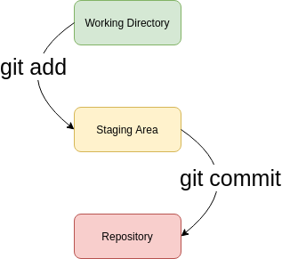
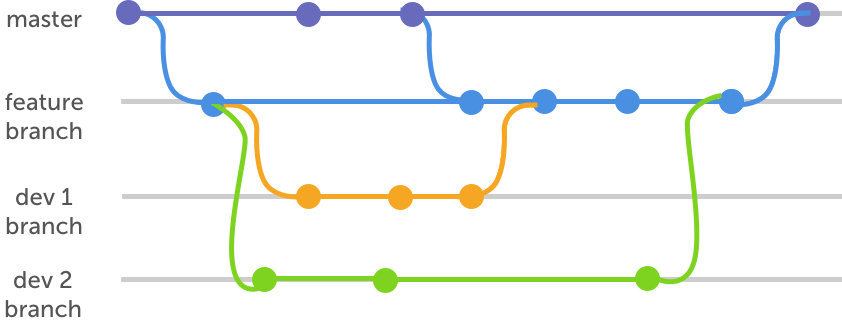
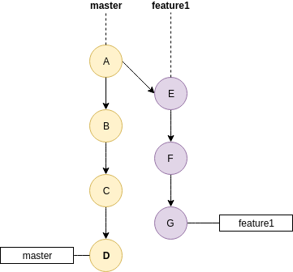
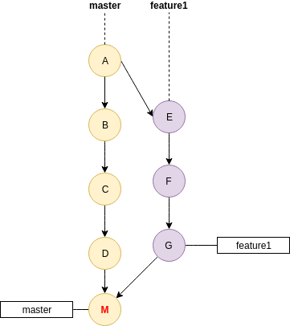
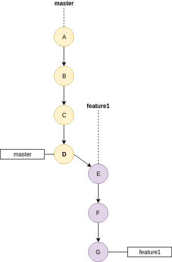
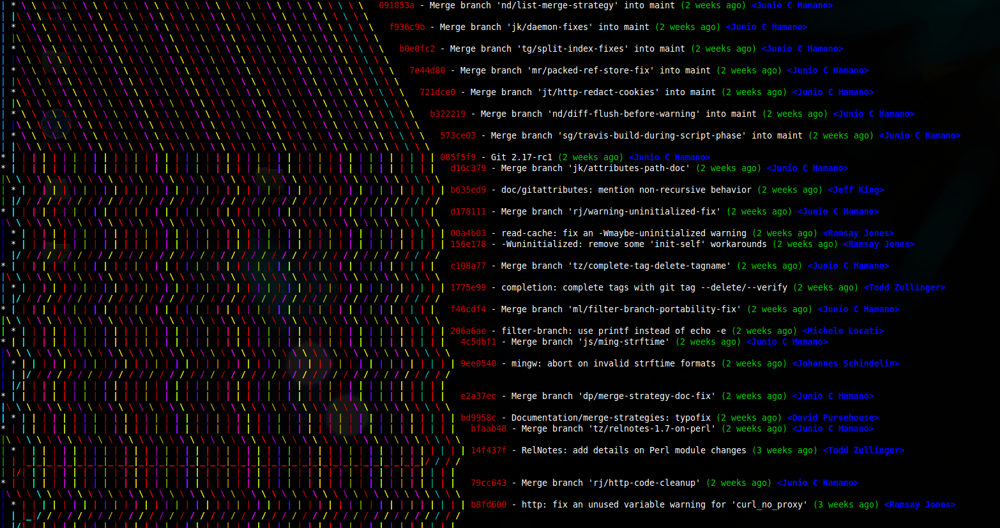
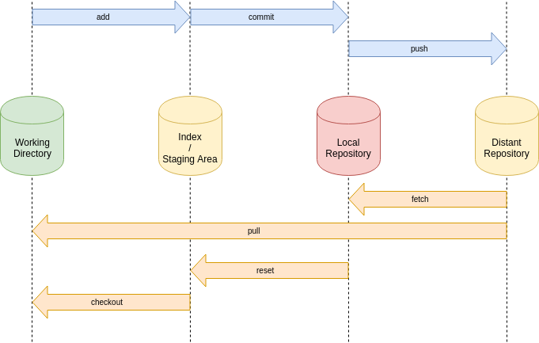

Gestion de version décentralisée
http://poadv120/git
Plan
- Introduction
- Les bases, le stage
- Utilisation des branches
- Mode distribué
- Flux de développements
Introduction
Introduction
VCS Centralisé et Distribué
- Centralisés : Le serveur conserve l'historique des versions des fichiers
- Les développeurs possèdent une version du fichier
Introduction
- Chaque développeur possède l'historique des modifications apportées à chacun des fichiers
- Les développeurs peuvent échanger entre eux les modifications
Introduction
GIT
- VCS Distribué (comme Mercurial et Bazaar)
- Permet de se passer de serveur ... en théorie
- Très puissant et récent, créé par Linus Torvalds (créateur de Linux)
- Rapidité, gestion particulièrement pratique des branches
- Assez complexe et prévu à l'origine pour Linux
Les bases
Installation, premières commandes
Comprendre le stage

Les bases
Installation
Linuxsudo apt-get install git-core gitkhttps://gitforwindows.org/Les bases
Le fichier .gitconfig
git config --global user.name "nom PRENOM"git config --global user.email moi@adventiel.frvim ~/.gitconfigLes bases
[alias]
unstage = reset HEAD --
last = log -1 HEAD
co = checkout
st = status
ci = commit
dt = difftool
glog = log --oneline --graph --decorate
gloga = log --oneline --graph --decorate --all
--pretty=format:'%Cred%h%Creset -%C(yellow)%d%Creset %s %Cgreen(%cr) %C(bold blue)<%an>%Creset'
glogg = log --graph --abbrev-commit --decorate --all
--format=format:\"%C(bold blue)%h%C(reset) - %C(bold cyan)%aD%C(dim white) - %an%C(reset)
%C(bold green)(%ar)%C(reset)%C(bold yellow)%d%C(reset)%n %C(white)%s%C(reset)\"
[core]
autocrlf = input
editor = nano
excludesfile = /home/christian/.gitignore-global
[pull]
rebase = true
[diff]
tool = meld
[merge]
tool = meld
Les bases
Créer et cloner un dépôt
- Créer un dépot GIT
git initgit clone adresse-du-dépotLes bases
Consulter l'état du code
- Visualiser les modifications
git statusgit loggit log -pgit log --statLes bases
Visualiser les modifications
- Chaque commit est identifié par son SHA-1
* 3d7400d - (HEAD, origin/develop, origin/HEAD, develop) Merge branch 'fix/growing' into 'develop' (7 days ago)
|\
| * 51bf4fd - fix(growing-season) Added 2 months to end date, spec specific request (8 days ago)
* | c48b62f - Merge branch 'fix/export-csv' into 'develop' (8 days ago)
|\ \
| * | 6886ac0 - fix (devloc export associations): fix filter non null locations (8 days ago)
|/ /
* | 214110b - Merge branch 'feature/export-csv-associations' into 'develop' (8 days ago)
Les bases
Visualiser les modifications
- L'instruction checkout permet de déplacer le HEAD
# Vers une branche
git checkout develop # Vers un commit via son SHA-1
git checkout 51bf4fd # Vers un tag
git checkout v1.5.8 .git/HEAD
Les bases
Visualiser les modifications
- L'instruction show permet d'afficher le contenu d'un objet
git show SHA-1Les bases
Ignorer un fichier / répertoire
- Le fichier .gitignore permet d'ignorer un fichier ou un répertoire
cache/*
log/*
*.iml
target/
out.log
git config --global core.excludesfile "~/.gitignore-global"Les bases - Comprendre le stage
|  |
|
Les bases - Comprendre le stage
Gestion des fichiers
- Ajouter un fichier ou une modification de fichier dans l'index
git add nom-du-fichieradd ajoute une version du fichier dans l'index
git commitgit commit -m "message de commit"Les bases - Comprendre le stage
- Supprimer un fichier et le marquer comme tel dans le stage
git rm nom-du-fichiergit commit --amendLes bases - Comprendre le stage
Retour en arrière
- Le commit est retiré du dépot et déplacé dans l'index
- Les fichiers restent modifiés dans l'index
git reset --soft HEAD^git reset --mixed HEAD^git reset --hard HEAD^Les bases - Comprendre le stage
Navigation dans l'historique
| Symbole | Définition |
|---|---|
| HEAD | La version courante |
| HEAD^ | Le commit précédent |
| HEAD^^ | Le deuxième commit précédent |
| HEAD~1 | Le commit précédent |
| HEAD~3 | Le troisième commit précédents |
| v1.5.8 | Identifiant d'un tag |
Les bases - Comprendre le stage
Créer un tag
- Le tag est une étiquette associé à un commit (son SHA-1)
git tag v1.5.8 SHA-1git tag -a v1.5.8 -m "this is a tag"TP1 - Les bases
Installation, premières commandes
Comprendre le stage
TP1 - Les bases - Comprendre le stage 1/2
- Créer un dépot
- Créer plusieurs fichiers, les placer dans l'index, puis commiter
- Modifier un fichier, puis afficher les différences
- Renommer un fichier, déplacer un autre fichier, puis commiter
- Créer un répertoire, puis ignorer le en utilisant le fichier .gitignore
- Ajouter un fichier dans ce répertoire et vérifier qu'il n'est pas possible de le commiter
TP1 - Les bases - Comprendre le stage 2/2
- Créer un nouveau dépot. Ajouter deux fichiers et créer un premier commit initial
- Créer deux nouveaux fichiers
key.txtetdate.txtet ajouter les à l'index - Restaurer le fichier
key.txtdans le Working Directory - Modifier le et ajouter le à nouveau dans l'index, puis commiter les deux fichiers
- Annuler le dernier commit pour obtenir à nouveau les deux fichiers dans l'index
- Restaurer le fichier
key.txtdans le Working Directory - Ajouter le à .gitignore puis commiter
date.txt
Les branches
Les branches
- Une branche est une référence à un commit
- HEAD est une branche spécifique qui pointe sur le commit courant
* 6e24cd7 - (HEAD, origin/develop, develop) Merge branch 'feature/back-rename' into 'develop'
|\
| * 5366c8e - (origin/feature/back-rename) feat(back) - add rename folder endpoint
|/
| * e15c657 - (origin/feature/update-gca-eval) feat(front): Update GCA Eval
Les branches
Dans quels cas créer une branche?
- Ma modification sera-t-elle rapide?
- Ma modification est-elle simple?
- Ma modification nécessite-t-elle un seul commit?
- Créer une branche pour toute modification qui pourrait être un peu longue
- La politique de création des branches est à discuter avec l'équipe de développement
Les branches
- Consulter les branches
git branchgit branch nom-de-la-branchegit checkout nom-de-la-brancheLes branches
Créer et changer de branche
git checkout -b nom-de-la-brancheCréer une branche à partir d'une autre
git checkout -b nouvelle-branche branche-sourceMerger les branches

Merger les branches
Le merge classique
git merge new-feature- La branche destination est la branche courante
- Conserve l'historique du développement d'une fonctionnalité
Merger les branches
Le cherry-pick
git cherry-pick [SHA-1]Un nouveau commit est créé avec un SHA-1 différent
Merger les branches
Le rebase
git rebase [SHA-1] ou nom-de-la-branche- Conserve l'ensemble des commits dans l'ordre
Le rebase interactif
git rebase -i [SHA-1]- Modifier le message d'un commit
- Supprimer un commit
- Modifier l'ordre des commits
- Modifier un commit
- Fusionner des commits
Merger les branches
| Avant merge | merge | rebase |
|  |  |  |
Merger les branches
rebase vs merge
- rebase modifie le point de départ d'une branche
- merge crée un commit de merge
- Un commit de merge apparaît sous forme d'une branche dans l'arbre des logs
- rebase recrée de nouveaux commits, avec de nouveaux SHA-1
- merge se comporte comme rebase s'il le peut
- avec merge, la gestion des conflits est faite à la fin
- avec rebase, la gestion des conflits est faite à chaque commit en conflit
Merger les branches
rebase vs merge
Merger les branches
TP2 - Les branches
TP2 - Les branches 1/3
- Créer une nouvelle branche et faire pointer le HEAD sur cette branche
- Créer un fichier, puis commiter le
- Constater le placement des étiquettes des branches master, HEAD et de la branche dans le log
- Faire en sorte que master concorde avec la nouvelle branche
- Constater le fast-forward
TP2 - Les branches 2/3
- Créer une nouvelle branche et faite pointer le HEAD sur cette branche
- Créer un fichier, puis commiter le
- Merger la branche sur master en utilisant la commande
git merge --no-ff - Afficher les logs et constater le commit de merge
TP2 - Les branches 3/3
- Créer une nouvelle branche et faite pointer le HEAD sur cette branche
- Créer plusieurs fichiers, puis commiter les
- Merger la branche sur master en utilisant
git rebase - Eventuellement essayer le mode interactif
L'étiquette master et celle de la branche doivent correspondre
Travailler avec un serveur distant

Travailler avec un serveur distant
- Cloner un dépot
git clone https://github.com/git/gitgit remote -vgit remote add nom-du-remote url-du-remoteTravailler avec un serveur distant
Update avec un fetch
git fetch nom-du-remotegit fetch nom-du-remote nom-de-la-branche- Récupère les mises à jour du serveur
- Pas de fusion avec les sources locales
- fetch ne modifie que le repository local. Pas l'index, ni le Working Directory
Travailler avec un serveur distant
Update avec un pull
git pull nom-du-remotegit pull nom-du-remote nom-de-la-branche- Equivalent à un fetch, puis un merge
- S'il n'y a pas de modification locale, git effectue un fast-forward
- Les modifications distantes sont fusionnées automatiquement
- En cas de conflit, il faut les résoudre manuellement
Travailler avec un serveur distant
Envoyer vers le serveur
git push- Par défaut, c'est la branche courante qui est envoyée
- De même, le dépot distant par défaut est origin
git push nom-du-remote branche-locale:branche-distantegit push -u origin master-uajoute les informations de tracking
Travailler avec un serveur distant
Flux complet

TP3 - Travailler avec un serveur distant
TP3 - Travailler avec un serveur distant 1/2
- Créer un nouveau dépot sur votre espace GitLab
- Créer un dossier local (Workspace Directory)
- Suivre les instructions pour lier le Workspace Directory au nouveau dépot
- Commiter des fichiers dans le repository local, puis envoyer les sur le serveur
- Constater les changements dans l'interface de GitLab
TP3 - Travailler avec un serveur distant 2/2
Simulation d'un projet
Panic room
Panic room
- # Machine à remonter le temps
git reflog
git reset HEAD@{index}git add . # or add individual files
git commit --amend# annule le dernier commit, laisse les changement sur le WD
git reset HEAD~ --soft
git stash
# Déplace le HEAD sur le bonne branche
git checkout name-of-the-correct-branch
git stash pop
git add . # ou uniquement certains fichiers, au besoin
git commit -m "your message here"
# done!Panic room
cd ..
sudo rm -r $@#feo%$-git-repository
git clone https://github.com/$@#feo%$-git-repository.git
cd $@#feo%$-git-repositoryhttp://POADV120/GitKrakenSetup.exe
Outils
- Git Kraken: https://www.gitkraken.com/
- Visual Studio Code: https://code.visualstudio.com/
- Sourcetree: https://www.sourcetreeapp.com/
- https://delicious-insights.com/fr/articles/30-options-git-qui-gagnent-a-etre-connues/
- https://pioupioum.fr/developpement/git-10-commandes-utiles.html
- https://ndpsoftware.com/git-cheatsheet.html